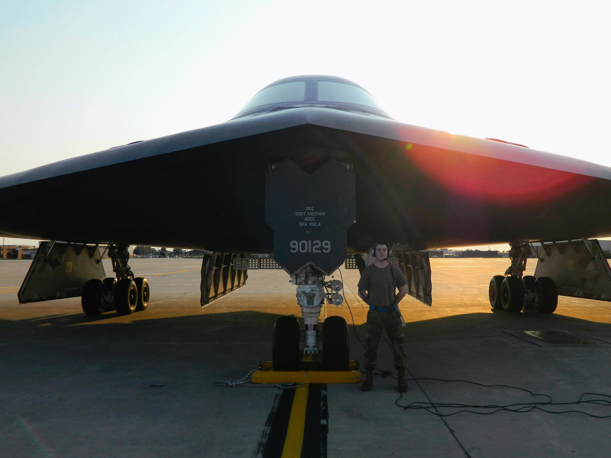

Dedicated United States Air Force Veteran, specializing as a Crew Chief on the B-2 Stealth Bomber. Result-driven maintainer, ensuring functional and safe aircraft with consistent daily flight inspections. Exemplary troubleshooting and resolution skills for complex technical issues. Interact and influence maintenance technician peers and staff to meet maintenance standard expectations.
